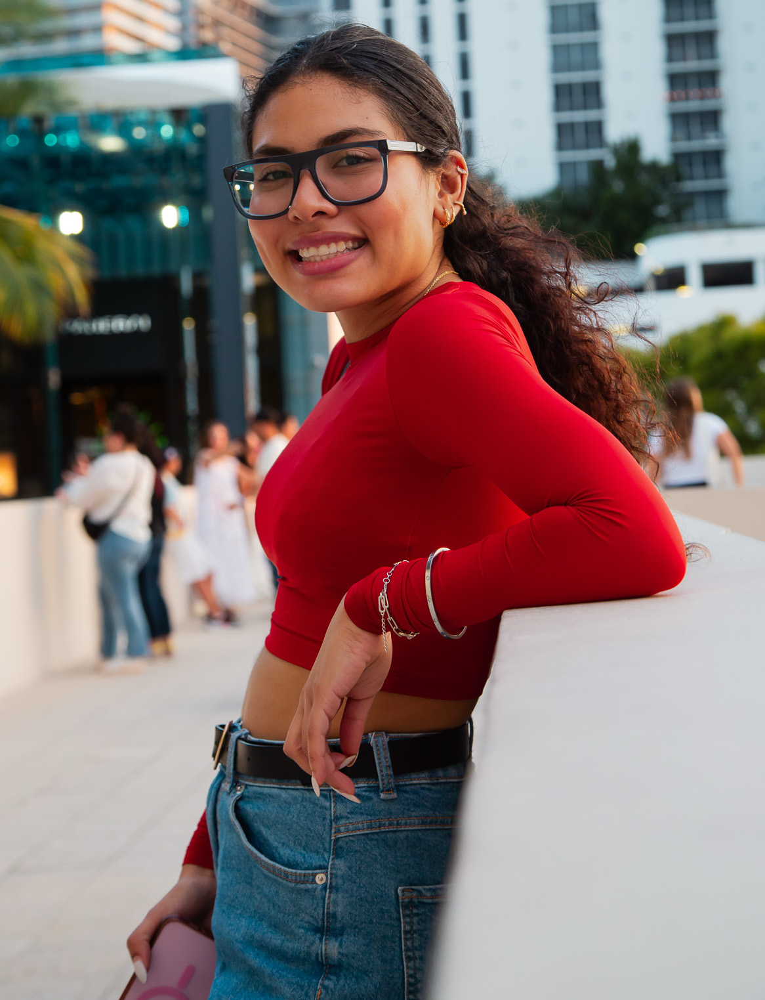

Sobre Mi
Diseñadora UX/UI
Diseñadora UX/UI Junior apasionada por crear experiencias digitales funcionales y centradas en el usuario. Con experiencia en prototipos interactivos, investigación de usuarios y mucho mas. Manejo herramientas como Figma y aplico metodologías como Desing Thinking . Actualmente amplío mis conocimientos en desarrollo Full Stack para complementar mis habilidades en diseño y tecnología.